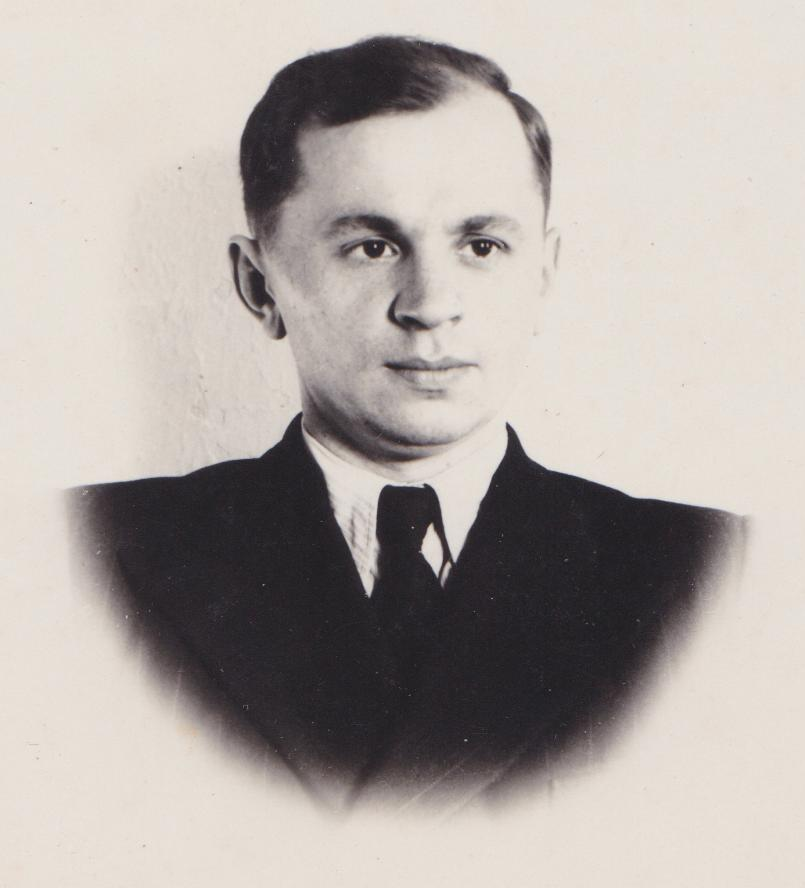

Харитонюк
Андрей Васильевич
Андрей Васильевич
Дата рождения: 30.11.1920
Родился 30 ноября 1920 года в д. Забава Кобринского района. В 1931 г. закончил 4 класса школы в д. Верхолесье, затем с 1932 по 1939 гг. учился в гимназии, затем в лицее г. Кобрина. С 13.02.1940 по 2.09.1940г. работал в качестве старшего табельщика на гидроузле Днепробугстроя. С 1 сентября 1940 г. по 22 июня 1941 г. работал преподавателем математики 5-7 классов в Чернянской НСШ Дывинского района Брестской области.
После закрытия школы работал в Дывинском лесничестве. С 1 июля 1943 года – член ЛКСМБ, принят Дывинским подпольным райкомом комсомола. С 01.09.1943 по 01.04.1944 г. был членом Дывинского подпольного комитета ЛКСМБ, занимал должность кустового секретаря подпольного райкома ЛКСМБ.
С 01.04.1944 по 01.08.1944 г. воевал в партизанском отряде им. Фрунзе бригады им. Сталина.
С 12.08.1944 был направлен в распоряжение Дывинского районо для использования на педработе. Работал В Залесской школе Кобринского района учителем, а затем заведующим учебной части.
10 июля 1946 г. поступил на 1-й курс физико-математического факультета Брестского пединститута и окончил его в 1948 году. Работал затем директором Батченской школы Кобринского района.
В 1952 году переведён в СШ №2 кобрина, затем вместе с семьёй переехал в г. Столин и работал учителем математики и завучем в Столинской средней школе с 1957 года. Получил звание «Выдатник народной асветы». Награждён орденом Великой Отечественной войны 2 степени, медалью «За трудовые заслуги» и многими юбилейными наградами.
В марте 1960 года был делегатом учительского съезда БССР.
Умер в 2006 году.